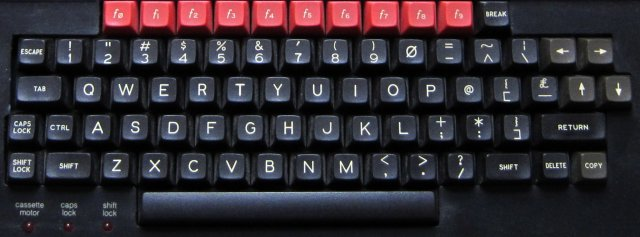

BeebEm - BBC Micro and Master 128 Emulator

|
|
BeebEm - BBC Micro and Master 128 Emulator |
|
Keyboard MappingsThere are two main keyboard mappings available on the BeebEm Options menu, default mapping and logical mapping. The Beeb keyboard looks like this:  Logical MappingWith the Logical Mapping the key symbols on the PC keyboard are mapped directly to the same symbols on the Beeb keyboard, so you get what you press. Note that the logical mapping sometimes has to change the shift key state in order to work so it can do some unexpected things if you use it while playing a game that uses shift. Its probably better to use Default Mapping when playing games. Default MappingFor the Default Mapping most of the keys are the same on the Beeb and PC but these are not:
Shortcut KeysThere are some shortcut keys for various features:
Custom Key MappingsKey mappings are kept in .kmap files stored in the 'My Documents\BeebEm' area. BeebEm will read the Default.kmap and Logical.kmap files at start up. These files contain mappings for a UK PC keyboard and they can be replaced with alternative mapping files if you are not using a UK keyboard (for example, the USLogical.kmap file for a US keyboard). You can create your own mapping to map your PC keyboard to your emulated BBC one. Do this as follows:
Mapping PC Joystick to BBC KeysTo enable translating PC joystick actions to BBC keys, use menu item "Options → Joystick To Keyboard → Enable Joystick To Keyboard". BeemEm supports mapping up to two joysticks or gamepads to BBC keys, with each joystick actions (button presses or stick movements) mapped separately. Creating mapping of PC joystick movements and buttons to BBC keys is similar to creating custom key mappings:
As with PC keys, you can map joystick actions to BBC keys in shifted and unshifted state separately. The most common scenario is to assign a joystick action to the same BBC key in both shifted and unshifted state. To do that, just click on the BBC key that you want to map, and move joystick or press button twice - once for unshifted and second time for shifted state. Additionally, you can assign one or more joystick buttons to the SHIFT key. This can be used to assign one joystick button as a modifier for other joystick actions, which can be useful for games that have a lot of keyboard contols. PC joystick to BBC keyboard mapping is independent from enabling PC joystick acting as BBC joystick. If you enable both, primary PC joystick axes (primary stick up, down, left and right) and first two buttons are mapped to BBC joystick. You can map other axes and buttons to BBC keys. You can map those axes and buttons which are acting as BBC joystick to BBC keys as well. In that case, the PC joystick action will be seen as both BBC joystick action and BBC key press. To remove mapping from previously mapped joystick action, click on the 'Unassign' button. It will display small window and wait for the joystick action. Press the joystick button or move the joystick in the direction that you want to unmap. The same window will be displayed again, giving you the opportunity to unmap the joystick action in both unshifted and shifted state at one go. You can press the "OK" button to skip the second unassignment. At start up BeebEm loads DefaultUser.jmap from the User Data Folder, if such file was created by user. If this file is not present, all joystick actions start unassigned. Menu item "Options → Joystick To Keyboard → Autoload Joystick Mapping" toggles Autoload Joystick Mapping option. If this option is enabled, BeebEm will automatically look for joystick mapping file based on name of image file started from "File → Run Disc.." or "File → Load Tape..." menu item, or from command-line. The sought mapping file has the same name and directory as loaded image, but extension changed to ".jmap". If no such file is found, joystick mapping is reset to default - either empty, or that from "DefaultUser.jmap" file. If the Autoload Joystick Mapping option is enabled, the "Save Joystick Mapping..." dialog will automatically suggest correct file name for currently loaded image file. |
Copyright © 2020 Mike Wyatt